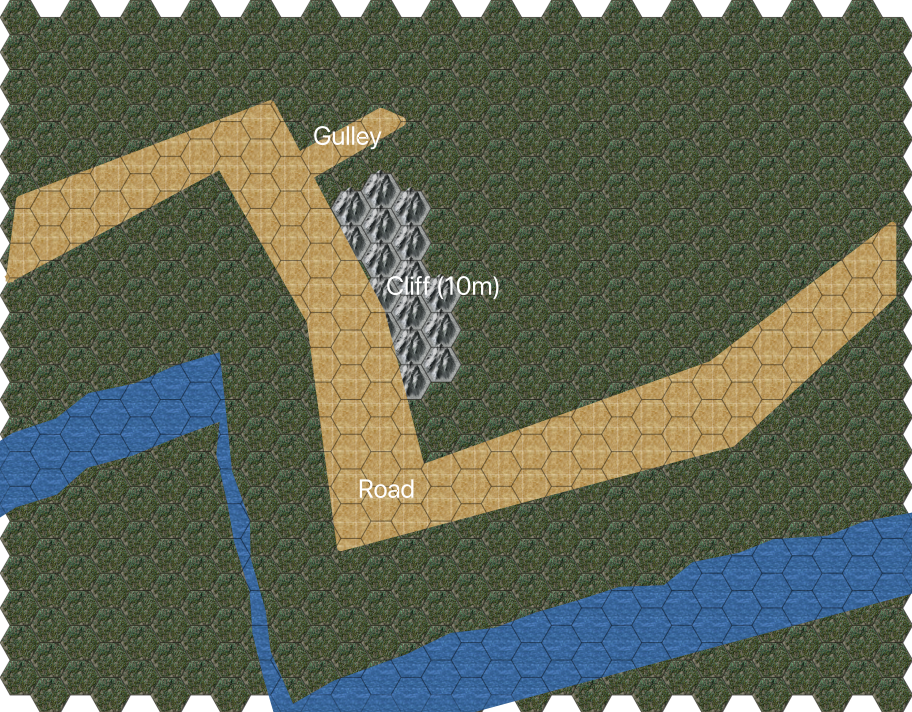

Cliff Near the Border¶
The road passes along the side of a steep hill. To the north, it’s a a cliff at least 10m high. To the south it drops off for 30m or more to a narrow river. The slope down down to the river is too steep for horses, and would be a struggle for people.
The road is reasonably wide (6-7m), with twists to follow the river’s course.
See The Exchange.

Cliff Near the Border¶
Scale: 1 hex = 2m
The party will be passing from left-to-right as they move from North-West to South-East on their way from City of Eagles to City of White Water.
There are goblins waiting along the cliff with orders to get a prisoner. After the prisoner is secured, they must return to their caves. The goblins are good at hiding and have magical protections. To detect their presence before they attack has a difficulty of at least Heroic.
Just beneath a layer of road dirt at the base of the cliff, they’ve buried a net. The edges of the net are tied to ropes concealed among the dirt and rocks of the cliff face. At the top of the cliff, the goblins have teams of dogs with harnesses waiting to haul.
As the first of of your party – ideally Squire Starter, since he instists on leading – passes over the net, goblins will whisk them up the cliff. This causes 1D damage when the net closes and the character is banged into the cliff. The horse will also take 2D damage.
It will take about half a minute (6 rounds) of shouting, whipping and barking, to hoist the load up the 10m cliff. It will take a few more rounds (2D) to extract the hostage, and any saddlebags, and start running toward the caves around the Temple of the Jackal.
There are ways to scramble up the steep hillside on either side of the cliff. While it’s only 10m, it’s nearly straight up, and any coordination (or agility) failures result in 1D falling damage (armor won’t help protect against this.)
To the west, there’s a gulley, but, the goblins are guarding this. It’s packed with shrubbery and brambles making progress difficult.
Once the part reaches the top, there will be goblins, a net, ropes, and a confused-looking horse. The goblins will split: and two-thirds will bolt. The remaining one-third will guard their retreat.
Goblins¶
There are 15 Goblins, 3 Greater Goblins, and 7 dogs in this operation:
5 goblins and 1 greater firing down and throwing rocks at pursuers attempting to scale the cliff. They’ll shift positions to prevent anyone from ascending.
5 goblins and 1 greater securing the gully to the west with a path that leads up the cliff.
5 goblins, 1 greater, and 7 dogs to hoist up as much as 1 ton and start dragging it away.
Greater Goblin: Agility 3D+2, acrobatics +2, dodge +2, fighting +2, melee combat +2, stealth +2, Coordination 3D+2, marksmanship +2, throwing +1, Physique 3D+2, running +2, stamina +2, Intellect 3D, healing +2, scholar +2, traps +2, Acumen 3D, crafting +2, survival +2, Charisma 3D, command +2, intimidation 1D. Advantages: Equipment (R2), Weapon or survival gear unknown to humans, Disadvantages: Cultural Unfamiliarity (R2), Lost in human company, Special Abilities: Combat Sense (R2), Surprise reduced by 4, Move: 10, Strength Damage: 2D, Fate Points: 1, Character Points: 5, Body Points: 40, Equipment: bone and hide armor +1D; buckler +2; sword +1D+2, Description: Inhabitants of the realm of mountains and forests.
Goblin: Agility 3D, acrobatics +2, dodge +2, fighting +2, melee combat +2, stealth +2, Coordination 3D, marksmanship +2, throwing +1, Physique 3D, running +2, stamina +2, Intellect 3D, healing +2, scholar +2, traps +2, Acumen 3D, crafting +2, survival +2, Charisma 2D. Advantages: Equipment (R2), Weapon or survival gear unknown to humans, Disadvantages: Cultural Unfamiliarity (R2), Lost in human company, Special Abilities: Combat Sense (R2), Surprise reduced by 4, Move: 10, Strength Damage: 2D, Fate Points: 1, Character Points: 5, Body Points: 27, Equipment: bone and hide armor +1D; buckler +2; sword +1D+2, Description: Inhabitants of the realm of mountains and forests.
Dog, Guard: Agility 3D, dodge 6D, fighting 5D, Coordination 1D, Physique 4D, running 4D+1, lifting 2D, Intellect 1D, Acumen 2D, search 3D, tracking 4D, Charisma 2D, intimidation 5D, mettle 4D. Move: 25, Strength Damage: 1D, Fate Points: 1, Character Points: 5, Body Points: 12, Natural Abilities: Natural Hand-to-Hand Weapon (Rteeth (damage +1D)), ; small size (scale modifier 4).
The Bandit Army¶
A force from the bandit army, only about 2D men, will be patrolling near the goblins to offer support.
Bandit Army Highwaymen: Agility 3D+1, fighting +2, melee combat +2, Coordination 3D, marksmanship +1, Physique 3D+2, Intellect 3D, traps +1, Acumen 3D, survival +1, tracking +1, Charisma 2D. Disadvantages: Infamy (R2), Known outlaws; Quirk (R2), greedy, Move: 10, Strength Damage: 2D, Fate Points: 1, Character Points: 5, Body Points: 22.